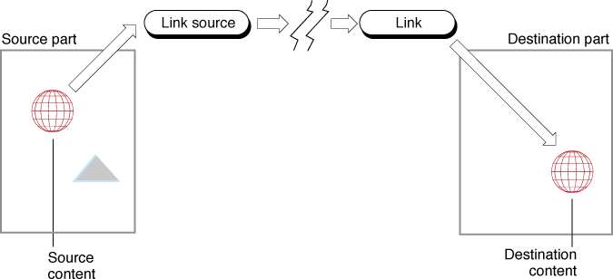

Linking
Linking is a mechanism for placing information into a part and allowing that information to be updated whenever source information in another location changes.Linking support in OpenDoc is a combination of event-handling code and storage code. It uses the same data-transfer mechanisms as the clipboard and drag and drop, but it also includes a set of notification calls that keep the transferred data synchronized with its source.
Some aspects of linking are closely related to other data-transfer concepts. Link specifications, used in writing data to the clipboard or drag-and-drop object, are described in the section "Link Specification".
Link Concepts
Linking requires the cooperation of one or two parts with several linking-
related objects. Figure 8-10 is a schematic illustration of the objects and data involved in linking. The figure shows a link between two separate parts (which can be in the same document or in different documents), although links can also occur within a single part.Figure 8-10 Objects and data involved in linking

The user creates a link by requesting it during a paste or drop operation. The part that contains the source of the information to be linked is called the source part. The content that is to be copied and sent to another part is called the source content or source. The source part creates an object, the link source, and places into it a copy of the source data; that copy is stored in the same document as the source part.The part that is the intended destination of the information to be linked is called the destination part. The content that is actually copied into the destination part is called the destination content or destination. The draft object of the destination part creates an object, the link, that is stored in the same document as the destination part. For a link within a single document, the link object and the link-source object share the same copy of the source data. For cross-document links, the two objects use separate storage units that each have a copy of the linked content, although the existence of separate storage units does not affect your part's interactions with either object.
The link-source object contains references to all link objects for which it is the source. (Within a given document, there is only one link object associated with each link source, even if the source is linked to multiple destinations in the document.) The user is free to edit the source of a link; when a change occurs in the source part and the link needs to be updated, the source part copies the source content into the link-source object. The destination part then copies the content from the link object into the destination itself.
OpenDoc links are unidirectional; changes are propagated from the source to the destination only. You should not permit users to edit any link destinations that you maintain; such edits would be overwritten when the link is updated.
Whether it contains the source or the destination of a link, your part is responsible for defining the exact content that constitutes the linked data and for knowing what visual area it covers in your part's display. Linked data, whether at the source or destination, is part of your own content; you store and manipulate it according to your own content model, and under your own control.
Link Update ID
Each link source and each link destination--that is, every region of content that is the source or destination of a link--must have an associated update ID. The source part determines the update ID associated with the link and updates the ID each time the source changes. The destination part stores the update ID of the link that was current at the time the destination was last updated through the link.Whenever the content in your part changes--for instance, in response to a series of keystroke events--you need to assign a new update ID to all link sources directly affected by that change. Note that all link sources affected by a given change must have the same update ID. You obtain a new update ID by calling the session object's
UniqueUpdateIDmethod.When you update a link source, you can save the update ID in your source content and use it later to determine whether your source content and the content of the link-source object are identical.
A circular link or recursive link can occur when changes to a link's destination directly or indirectly affect its source. To avoid endless sequences of updates, it is important that your part take these steps:
- Whenever your part updates a link destination that also participates in a link source, it must propagate the update ID passed to it. Your part must update the affected source with the update ID passed to the destination, rather than calling
UniqueChangeID.- Whenever a content change to your part results from an update to a link destination, your part must--when it calls its frame's
ContentUpdatedmethod--propagate the update ID passed to it.- Whenever your part updates a link source manually (on explicit user instruction), it should not propagate an existing update ID. It should always call
UniqueChangeIDto get a new update ID.Automatic and Manual Updating
OpenDoc informs destination parts when the sources of their links have been updated. The update notification can beThe user selects whether updating is to be automatic or manual, either in the Paste As dialog box when the link is first created, or in the Link Source Info and Link Destination Info dialog boxes after the link exists.The user must select both on-save updating at the source and automatic updating at the destination if automatic updating is to occur.
- automatic, which means immediately (if the source is in the same document as the destination) or whenever the user saves the source document (if the source is in a different document)
- manual, which means only when instructed to do so by the user
The user initiates a manual update by pressing the Update Now button in either the Link Source Info or Link Destination Info dialog box. Note, however, that manual updating applies to each half of the link separately:
For link sources, the link source object retains information about whether updating is to be automatic or manual. For link destinations, it is up to the destination part to save that information (see "Link Info"), because the same link object can supply several destinations with different settings.
- Pressing the Update Now button in the Link Source Info dialog box updates the link source object from the source data, but it does not result in an update notification being sent to the destination part (unless the user has specified automatic updating at the destination).
- Pressing the Update Now button in the Link Destination Info dialog box updates the link destination from the contents of the link object, but it does not update the link source object from the source data.
To be notified automatically of changes to the source of a link, your destination part calls the link object's
RegisterDependentmethod, supplying it the update ID of the last content it read from the link. Each link object maintains a private registry of dependent parts and calls theirLinkUpdatedmethods whenever the link source changes. Your part should respond to this method call by updating its destination content from the link object, as described in "Updating a Link at the Destination".If updating is to be automatic, your part should register for update notification when it first creates the link (passing an update ID of
kODUnknownUpdate) and whenever your part reads itself from storage (passing the appropriate stored update ID from its link info structure). Be sure you are prepared to receive a notification when you callRegisterDependent, because yourLinkUpdatedmethod may be called beforeRegisterDependentreturns. You can unregister and re-register as desired, but be careful not to register more than once at a time with the same link, even if it serves more than one destination in your content.If your draft permissions (see "Drafts") are read-only, you should not register for update notification. Even if you do register, you do not receive notifications.
- Updating a manual link without user instruction
- If you maintain a link source set for manual updating, the state of your source content at any given time may be different from the contents of the link-source object. If another destination is added to the link, you must update the link-source object--even though the user has not explicitly requested the update--so that the new destination and all existing destinations will show the same content.

Frame Link Status
All frames have a link status that describes the frame's participation in links. Parts are responsible for setting the link status of all frames that they embed; the link status indicates whether the frame is in the source of a link, in the destination of a link, or not involved in any link. Parts can use this information to decide whether to allow editing of linked data, and whether to allow creation of a link within an existing link. See Table 8-4 for a list of the possible combinations.
- Note
- If the user attempts to edit the content of any of your display frames whose link status is
kODInLinkDestination, your part editor should call the display frame'sEditInLinkmethod. See "Editing a Link Destination" for details.When to Change Link Status
In general, any time that you create a link involving an embedded frame or add an embedded frame to your part, you should set the frame's link status.
- When your part creates a link source, it should call the
ChangeLinkStatusmethod of each the embedded frames within the content area of the link source, passing it the valuekODInLinkSource.- If you add embedded frames to a link source, call
ChangeLinkStatusfor each new frame, passing it the valuekODInLinkSource.- If pasting and creating a link destination in your part involves adding embedded frames at the destination, call
ChangeLinkStatusfor each new frame, passing it the valuekODInLinkDestination. (This situation may arise either during a paste-with-link involving embedded frames, or during an update of a link destination that includes embedded frames.)- Any time you embed a frame outside of any link source or destination that you maintain, set its status to
kODNotInLink.- If you break a link but keep the embedded data at the source or destination, set the status of each frame that was formerly linked to
kODNotInLink(unless it is also in a source; see next item).- Destinations take precedence over sources. If one of your embedded frames is contained in a link destination that you maintain, and that destination is itself contained in a link source that you maintain, you should set the embedded frame's status to
kODInLinkDestination. If you later break that link destination (but not its enclosing link source), set the frame's status tokODInLinkSourcerather thankODNotInLink.The
- IMPORTANT
- If you do not support linking, you must nevertheless
set the link status of your embedded frames
(tokODNotInLink).ChangeLinkStatusmethod changes the value of the frame's link status, if necessary, and calls theLinkStatusChangedmethod of the frame's part, so that the part can change the link status of any of its own embedded frames.When you set the link status of a frame in any of these situations, you need to take into account only the links that your part maintains; you can ignore your own display frame's link status. OpenDoc automatically adjusts the link status of frames that you embed to account for your display frame's status.
You can examine the link status of a frame by calling its
GetLinkStatusmethod.Determining the Link Status of a Display Frame
Before your part editor allows modification of your part's content, it must determine the link status of the display frame in which it is being modified. Do not assume your display frame's link status iskODNotInLink;LinkStatusChangedwill not be called when a display frame is reconnected unless the frame's link status has changed. If your part caches the link status of its display frames, initialize the cached setting by usingGetLinkStatuswhen the frame is added or reconnected.The LinkStatusChanged Method of Your Part Editor
Your own part'sLinkStatusChangedmethod is called by theChangeLinkStatusmethod of any of your display frames, whenever the display frame's link status is changed. This is its interface:void LinkStatusChanged(in ODFrame frame);Your implementation ofLinkStatusChangedshould iterate through all of your part's embedded frames, calling each one'sChangeLinkStatusmethod.It is important to make this call to all of your embedded frames, so that they can in turn call their parts'
- The link status of embedded frames already in links that you maintain cannot change; sources will remain sources, and destinations will remain destinations. Therefore, you do not need to call
ChangeLinkStatusfor them.- You can set the link status of embedded frames not involved in links that you maintain to be equal to your display frame's link status. However, you can simply set their link status to
kODNotInLink, letting OpenDoc adjust their link status if necessary.LinkStatusChangedmethod to change the link status of more deeply embedded frames, and so on.If the frame passed to your
LinkStatusChangedmethod has also been opened into a separate part window, be sure to call theChangeLinkStatusmethod of the root frame of that window as well. It is up to you to ensure that the link status of your part windows and their source frames is consistent.You needn't call the
ChangeLinkStatusmethod of all of your embedded frames immediately upon receiving a call to ChangeLinkStatus. If you instantiate frame objects only when needed for display (see "Lazy Internalization"Content Changes in Embedded Frames
Because linked content can contain embedded frames, there must be a way for an embedded part to inform its containing part that its content has changed, so that the link can be updated.The ContentUpdated Method
Any time a content change occurs in one of your part's display frames, you should follow the procedures described in the section "Making Content Changes Known". Part of the procedure is to call the frame'sContentUpdatedmethod. TheContentUpdatedmethod then calls theEmbeddedFrameUpdatedmethod of your part's containing part, informing it that the content of one of its embedded frames has changed. If your display frame is involved in a link source maintained by your part's containing part, the containing part can then choose to update the link-source object with the new data.(This
ContentUpdatedmethod is not identical to theContentUpdatedmethod ofODLinkSource, discussed in the section "Updating a Link at the Source". However, you pass the same update ID to bothContentUpdatedmethods when a content change to your part is entirely due to a content change to its link source.)The EmbeddedFrameUpdated Method of Your Part Editor
Your part'sEmbeddedFrameUpdatedmethod is called by theContentUpdatedmethod of any of your embedded frames whenever the content of the frame's part has changed. This is its interface:void EmbeddedFrameUpdated(in ODFrame frame, in ODUpdateID change);The method is passed a reference to the embedded frame and an update ID identifying the modification. You should respond by saving the update ID and updating any link-source objects you maintain that involve that frame (and whose updating is automatic). When updating the link source, pass it the update ID you received in the call to this method.Link Borders
If your part contains the source or destination of a link, you are responsible for drawing an appropriate border around the linked content area when requested to do so. Any time that the user selects any content within the link or checks the Show Links setting in your document's Document Info dialog box, you need to show the border of the link source or destination whenever you draw. For recommended appearances for the link border, see the sections "Link Borders".Whenever you draw your part's content in a facet, first call the
ShouldShowLinksmethod of the facet's window. IfShouldShowLinksreturnskODTrue, draw borders around any link sources and destinations.Link Info
The link info structure (typeODLinkInfo) contains fields that hold information about the nature of a link, such as the part kind of its intrinsic data, its creation date, and its update ID. Your part should allocate and maintain a link info structure for every link destination that it contains.Here is the structure's definition:
struct ODLinkInfo { ODType kind; ODTime creationTime; ODTime changeTime; ODUpdateID change; ODBoolean autoUpdate; };You fill in the fields of the link info structure when you first create a link, you store it privately, and you update it as needed.When you display the Link Destination Info dialog box, you pass a link info structure to the
ShowLinkDestinationInfomethod of the link object that represents your link destination.If you move or copy a link destination, you transfer the link info along with it so that the new destination can maintain the same characteristics as the original.
For an example of the Link Destination Info dialog box and instructions on how to handle user interaction with it, see the section "Selection Info"
Linking and Undo
Just as the basic data-transfer actions (cutting, pasting, and dropping) should be undoable, so should their variations that involve linked data. The user should be able to undo (and redo) any of these actions:When a link is created, the part receiving the data and creating the link destination adds a beginning action and ending action to the undo action history (see "Adding Multistage Actions"), whereas the source part adds a single action to the history when it creates the link source.
- pasting or dropping content and creating a link to its source
- pasting or dropping content that contains existing linked data
- deleting or cutting content that includes one or more link sources or destinations
- breaking a link at its source or its destination (through the Link Info dialog boxes)
Edits to the source content of a link must also--like any edits to the content of your part--be undoable. However, updating a link source object from its source content does not need to be an undoable action.
Likewise, updating the destination content of a link from its link object does not need to be an undoable action.
- If the link source is updated manually, undoing or redoing changes to source content has no effect on the link source object. A manually updated link source always reflects the state of the source content at the last update.
- If the link source is updated automatically, changes to source content accomplished through an undo or redo action should cause you to update the link source as usual. (Be sure to use the update ID associated with the restored or redone content when updating.) Furthermore, automatic updating is not a user action; since it is not performed by user command, it likewise cannot be undone.
When you delete or cut content that includes a link source or destination, or when you break a link, follow the procedures outlined in the section "Breaking and Cutting Links" to make sure that you can undo the actions.
- Editing the content at the destination of a link is not generally permitted. Because undoing or redoing an update to a destination would constitute editing the destination, you should never put the update action in the undo or redo stacks.
- You can, however, allow changes to the destination content that can be maintained across a link update, such as a style applied to the entire destination. Such nonediting changes can be undoable or ignorable, depending on your part's content model.
Locking and Unlocking Links
Both the source part and destination part of a link, or even separate destination parts of a single source, may attempt to access linked data simultaneously. Therefore, many methods of the classesODLinkSourceandODLinkrequire that you provide a key before accessing the storage unit containing the content of a link. You obtain the key by first calling theLockmethod of the link-source object or link object involved. In the current implementation of OpenDoc for the Mac OS, theLockmethod returns false immediately regardless of a non-zero wait argument. Thus, the lock cannot be granted. In general, there is no urgency about updating links at either source parts and destination parts. If your part fails to obtain a lock, it can update the link later, for example by registering for idle time and attempting to obtain the lock during a future call toHandleEvent.You unlock a link by calling the
Unlockmethod of the link-source object or link object involved. After you have unlocked a link, do not attempt to access its content storage unit.Manipulating Links
This section describes some of the basic procedures you follow in creating links, reading and writing linked data, and updating links.Related information is described as part of general data-transfer considerations earlier in this chapter. Creating and removing link specifications are described in the sections "Link Specification".
Creating a Link at the Destination
A link is created when the user decides--using the Paste As dialog box--to link rather than statically transfer data while performing a paste. The destination part--the part receiving the paste or drop--retrieves the link specification from the clipboard or drag-and-drop object and calls its draft'sAcquireLinkmethod. The draft in turn calls theCreateLinkmethod of the source part (the part that placed the data in the clipboard or drag-and-drop object).If your part is the destination part that creates a link to pasted data from the data's source, you can use the following steps. It is assumed that you have previously called the
ShowPasteAsDialogmethod of the clipboard or drag-and-
drop object (see "Handling the Paste As Dialog Box").Never read the link content from the storage unit of the clipboard or drag-and-
- Focus the clipboard or drag-and-drop storage unit on the link specification it contains. Use your draft's
CreateLinkSpecmethod to instantiate the link specification, then call the link specification'sReadLinkSpecmethod to have it read itself from the storage unit.- This link-creation procedure should be undoable. If the data transfer for this link is a paste from the clipboard, add a beginning action to start a multistage transaction. That way, if the user decides to reverse the paste, both the paste and this link creation will be undone together. (Do nothing here if this data transfer is a drop.)
- Pass the link specification to your draft's
AcquireLinkmethod to construct the link object from the link specification.- Create a link-info structure (type
ODLinkInfo) to associate with the link destination, as described in the section "Link Info"kODUnknownUpdate), set its creation time to the current time, set its modification time to the modification time of the link object, and give it a part kind and an auto-update setting that reflect the user's choices in the Paste As dialog box.- Add this link object to whatever private list of link destinations you maintain. Store the information you need to associate this link object with its link info structure and with the link-destination content in your part.
If you have translated the data that now makes up your link destination, you also need to record the part kind that it was translated from. You will have to translate the data again for each subsequent update to the link, and you will need to know which part kind in the data to read and translate.
- If the user has specified auto-updating in the Paste As dialog box, and if your part has not already registered with this link object in connection with other link destinations, call the link's
RegisterDependentmethod. Otherwise, manually update the link at this time by performing whatever actions your part'sLinkUpdatedmethod would perform (see "Updating a Link at the Destination").- To ensure that this link-creation procedure is undoable, take either of
these steps:
- If the data transfer for this link was a paste from the clipboard, add an ending action to the action history at this time, to complete the two-stage action started in step 2.
- If the data transfer for this link is a drop, you only need to add a single action to the undo action history. If the user undoes the drop, this link will be deleted also.
- Call the
ChangeLinkStatusmethod of any of your part's newly embedded frames that are within the linked content area, passing them the valuekODInLinkDestination.
drop object when creating the link; always read link content from the link object's storage unit.Every time the link is updated, your part (the destination part) must discard the data in the link destination and read it again from the link object. This process can entail discarding embedded parts and creating them anew from the updated link content. See "Updating a Link at the Destination"
for details.Your destination part must be able to draw a border around the link content area when asked to do so, as described in "Link Borders". Parts embedded in linked data are not involved in the maintenance of the link; even in the case of a link destination that consists of a single embedded part, you draw the link border around the embedded part's frame.
Note that only the draft should call
CreateLink; if your part is a destination part that needs a link to be created, you should call your draft'sAcquireLinkmethod.Creating a Link at the Source
When the user decides to create a link to data that your part placed on the clipboard or drag-and-drop object, the destination part's draft calls theCreateLinkmethod of your part (the source part). The draft passes back the data of the link specification that your part originally wrote when it placed the data on the clipboard or drag-and-drop object. This is the interface
toCreateLink:ODLinkSource CreateLink(in ODByteArray data);When your source part'sCreateLinkmethod is called, the method should duplicate in a link-source object all of the content that your part originally wrote (or wrote promises for) to the clipboard or drag-and-drop object.In your source part's
CreateLinkmethod, you can follow these general steps:If it intends to create a link, a destination part cannot inspect your link specification to determine the available part kinds of the intrinsic content; instead, it learns what part kinds are available by inspecting the contents property of the clipboard or drag-and-drop storage unit that accompanies the link specification. Your source part should therefore write the same content representations into the link-source content storage unit that it originally wrote into the clipboard or drag-and-drop content storage unit, because the destination part may be expecting any of those part kinds.
- Examine your own structures to see if the link-source object already exists.
CreateLinkmay have been called as a consequence of another destination being added to this link source, as described in "Replacing Link-Source Content in CreateLink".
- If the link-source object does exist, it may not contain a complete set of promises or data. In that case, you need to write the remaining part kinds to it. You can do so by updating the link source in a particular manner. Skip to step 5.
(If the link-source object does exist and does contain a complete set of promises or data, you could return the existing link-source object and take no further action. However, it may be simpler just to just rewrite all part kinds than to test to see if you have a complete set.)
- If the link-source object does not yet exist, continue with step 2.
- Create a link source object by calling your draft's
CreateLinkSourcemethod.- Add this link-source object to whatever private list of link sources you maintain. Store the update ID and any other information you need to associate this link-source object with the link-source content in your part.
- Call the
ChangeLinkStatusmethod of any of your part's embedded frames that are within the linked content area, passing them the valuekODInLinkSource.- Update the link source. Follow the steps listed in "Updating a Link at the Source".
- Creating a link source needs to be undoable. Add a single action to the undo action history so that you can remove the link source if the user decides to undo its creation.
- Unlock the link-source object.
- Increment the reference count of the link-source object and return a reference to the link-source object as the method result. (The caller is responsible for releasing the link-source object when it is no longer needed.)
Replacing Link-Source Content in CreateLink
If your part'sCreateLinkmethod is called and the link-specification data provided describes an existing link source that you maintain, your part must ensure that all content kinds that you support are available at the destination. If your part writes promises to the link source, you can ensure that all kinds are promised by replacing the current content in your link-source object. The procedure for replacing is similar to the regular updating procedure, except that you pass an existing update ID to the link-source object'sClearmethod, and you do not call the link-source object'sContentUpdatedmethod. See "Updating a Link at the Source" for details.If the link source is set for manual updates, and if your part has written promises to the link-source object, and if the source content has changed since the last update, your part may have to perform an explicit update--without waiting for user instruction--at this time.
Updating a Link at the Destination
When a source part updates its link-source object and calls the object'sContentUpdatedmethod, the link-source object immediately notifies its associated link objects of the change (except for link objects in other documents, which do not receive the notification until the source document is saved). The link destinations receive notification of the change in this manner:If your part contains the destination of a link and has registered as a dependent of the link (by calling the link's
- If the user has selected automatic updating of a link destination associated with one of the notified link objects, the link object associated with the updated source immediately notifies the destination part of the change by calling its
LinkUpdatedmethod.- If the user has selected manual updating, the destination part is not notified. In this case, it updates the destination only on user instruction, as described in "Automatic and Manual Updating".
RegisterDependentmethod), OpenDoc automatically calls your part'sLinkUpdatedmethod whenever the link object receives notification of an update to the source. This is the interface toLinkUpdated:void LinkUpdated(in ODLink updatedLink, in ODUpdateID change);You can perform automatic updates in your part'sLinkUpdatedmethod, and manual updates in response to a user command in the Link Destination Info dialog box (see "Selection Info").It is not always necessary to update immediately, during execution of
LinkUpdatedor when manually instructed to do so by the user. For example, if the destination has scrolled offscreen but is still registered as a dependent of the source, updating does not need to occur until (and if) the destination scrolls back into view. Your part editor can, if desired, generally perform link updates as a background task.You can take the steps shown here to read the contents of a link object when updating your link destinations.
If your part maintains the destination of a link whose source has been transferred from one part to another, the new source part might not write its data using all of the same part kinds as the original source part. Your part, therefore, might not be able to obtain updates in the format that it expects. If that situation occurs, your part should read whatever part kind it can, or else break the link.
- Call the link object's
Lockmethod. If you cannot acquire the lock for the link, it may be momentarily in use by another object; wait and try again.- Retrieve your part's stored link-info structure for that link.
- Access the link object's storage unit by calling its
GetContentStorageUnitmethod. (IfGetContentStorageUnitthrows the errorkODErrNoLinkContent, the last source update failed; do not update your destination at this time. IfGetContentStorageUnitthrows the errorkODErrCannotEstablishLink, the link could not be found.)Incorporate or embed the updated data into your part from the link object's contents property:
- If you are incorporating the linked data, follow the steps in "Incorporating Intrinsic Content".
- If you are embedding the linked data as a single part, follow the steps in"Embedding a Single Part".
- If you are translating the linked data before incorporating or embedding it, follow the steps in"Translating Before Incorporating or Embedding". Use information you recorded when you first created the link to know which part kind to read for translation.
In any of these cases, the only differences from other data-transfer operations are that you call the
Clonemethod of the link object's storage unit's draft, you specify a clone transaction ofkODCloneFromLink, and you read from the link object's content storage unit.You must discard any previously embedded parts and frames, replacing them with new ones cloned from the link. Also, you must connect the frames to your frame hierarchy, create facets for the currently visible ones, and change their link status by calling their
ChangeLinkStatusmethod, passing the valuekODInLinkDestination.- Update the link-info structure for the link with a new update ID and
new change time obtained by calling the link'sGetUpdateIDandGetChangeTimemethods.- Unlock the link. After you have unlocked a link, do not attempt to access its content storage unit.
- Inspect your part's private structures to see if this change has affected the data of any link source in your part. (It can if this destination is within a source.) If so, modify the source as shown in the section "Updating a Link at the Source" (next).
- Notify OpenDoc and your containing part that there has been a change to your part's content; see "Making Content Changes Known".
Updating a Link at the Source
The part maintaining the source of a link can rewrite values into the link-source object as necessary to update the link. If your part is the source part, take the steps listed here to update the contents of your link source (or to write it for the first time).The section "Automatic and Manual Updating").
The basic procedure for updating a link source is to first remove all content from the link source by calling its
Clearmethod. By callingClear, you ensure that all unneeded storage units are removed from the link, saving space in your draft.The
Clearmethod deletes the contents property of the link-source storage unit and all its data. You need to add a contents property and values back into the storage unit after callingClear, just as if you were creating the link source from scratch.In summary, follow these steps:
In general, it is not necessary and not always desirable to perform automatic updates to link-source objects immediately in response to every content change. When content is changing rapidly, such as during text entry, it is reasonable to wait for a pause before updating any affected links.
- Call the link-source object's
Lockmethod, and then call itsClearmethod. If you cannot acquire the lock for the link source, it may be momentarily in use by another object; wait and try again.
- If you are updating the link source because of content changes in your part, or if you are writing to the link source for the first time, or if this is a manual update, obtain a unique update ID and pass it to
Clear.- If you are updating the link source because of an update to a link destination within your source content, pass the link destination's existing update ID (the one that was passed to your
LinkUpdatedmethod) toClear.- If you are updating the link source because a change to an embedded frame caused your part to receive a call to its
EmbeddedFrameUpdatedmethod, pass the existing update ID (the one that was passed toEmbeddedFrameUpdated) toClear.- If you are just adding new part kinds to an unchanged existing link source, pass the link source's existing update ID to
Clear. (You must update the link if a new destination has been added and if the link source does not have a complete set of promises for all part kinds that you support.)- Access the link-source object's storage unit, create the contents property and the appropriate values, and write your updated source data. Write either data or a promise for all part kinds that you support, including standard part kinds. Update the frame shape annotation and any other needed annotation properties.
- If the data is intrinsic content--with or without one or more embedded parts--follow the procedure given in the section "Writing Intrinsic Content".
- If the data is a single embedded part, follow the procedure given in the section "Writing a Single Embedded Part".
Either way, specify a clone operation of
kODCloneToLink. You are encouraged to write one or more promises instead of writing the actual data, to avoid placing unused content into the link source.- If you are just adding new part kinds to an unchanged existing link source, skip this step. Otherwise, after you have updated the data of the link-
source object, notify it of the change, like this:
- If the content change originated in your source part, if this is the first time you are writing to the link, or if this is a manual update, call the link-
source object'sContentUpdatedmethod and pass it a new update ID (obtained from the session object'sUniqueUpdateIDmethod), so that it can in turn send update notifications to all its link destinations.- If the content change occurred in a link destination contained within your link source, call the link-source object's
ContentUpdatedmethod and pass it the link destination's existing update ID (the one that was passed to yourLinkUpdatedmethod), to avoid endless updating of circular links.- If the content change occurred in an embedded frame and your part's
EmbeddedFrameUpdatedmethod was called, call the link-source object'sContentUpdatedmethod and pass it the existing update ID (the one that was passed toEmbeddedFrameUpdated).- Unlock the link source. After you have unlocked a link, do not attempt to access its content storage unit.
Writing Linked Content to Storage
When your part writes itself to storage (see "Writing a Part to Storage"), it writes any linked data--whether source or destination--just as it would write any other content. In addition, however, it needs to write information for reconstructing the link objects and link-source objects involved.Writing Links in Externalize
There is no standard way to associate a link-source object or link object with a specific region of your content; how you create that association depends on the nature of your content. However, for all links, yourExternalizemethod and your methods that write to data-transfer objects need to write persistent references to the objects themselves, plus additional information. You should write the information in a format that is standard to your part kind; that way, any part editor that reads your part kind can reconstruct links from the stored data.For the source of a link, you need to include, in addition to a persistent reference to the storage unit of the
ODLinkSourceobject, the update ID associated with the linked content. (This may be different from the update ID in the link-source object itself, if the link is updated manually.)For the destination of a link, you need to include a persistent reference to the storage unit of the
ODLinkobject, plus the information in the fields of theODLinkInfostructure: the part kind, creation time, modification time, update ID, and auto-update setting of the linked data. Also, if your part has translated the linked data at the destination, you need to store the original part kind of the data (the kind before you translated it).Your part may also store extra information for convenience. For example, because your part needs to be able to draw a border around linked data, it may store link-border shapes in a private structure.
Writing Links for Data Transfer
If your part writes a single embedded frame (without surrounding intrinsic content) to the clipboard or drag-and-drop object, and if that frame is a link source or link destination, follow the procedures listed in "Writing a Single Embedded Part"kODPropProxyContents to the clipboard or drag-and-drop storage unit. In that property write a value that references the link or link-source object, as well as the link info fields and other necessary information. Any destination part that understands the format can then recover the link.If you write linked content to a data-transfer object and the destination part does not support linking, the content may be transferred, but the links will not be.
Reading Linked Content From Storage
When your part reads itself into memory, it may need to read in link-source objects and link objects as well. Likewise, when your part incorporates data that the user has pasted or dropped, your part may need to modify link sources or link destinations contained in that data.Special care is necessary because OpenDoc can eliminate links during data transfer (see, for example, Table 8-3). Therefore, you must perform the following two tasks when reading in data that includes links:
- Before you attempt to read in a link-related object, you must ensure that your persistent reference to it is valid.
- For every link-source object that you read in, you must ensure that your part is assigned as its source. The original source of the link may have been in another part, if the source content has been moved.
Reading Links in InitPartFromStorage
Here are the steps you can take to handle linked data when reading your part (inInitPartFromStorage). The general procedure for reading a part is described in the section "The InitPartFromStorage Method".
- As you encounter a persistent reference to a link object or link-source object in the content you are reading, ensure that the reference is valid. Before trying to read in the referenced storage unit, pass the persistent reference to the
IsValidStorageUnitRefmethod of the storage unit containing the content you are reading.
- If
IsValidStorageUnitRefreturns true, call your draft'sAcquireLinkSourceorAcquireLinkmethod to read in the object.- If
IsValidStorageUnitRefreturns false, the link-source object or link object no longer exists, and your part should no longer consider the associated portion of its own content as linked. This is not an error situation, and you need not notify the user if it occurs.- For each link-source object you read, call its
SetSourcePartmethod to associate it with your part. Add the link-source object to whatever private list of link sources you maintain, and associate the object with the specific content in your part that is the source of the link.- For each link object you read, locate the link-info structure for the link and associate the link object with the specific content in your part that is the destination of the link. Add the link object to whatever private structures you maintain for link destinations.
- For each link object you read, be prepared to register for update notification if updating is to be automatic. Either at this point or (preferably) once the linked data becomes visible or affects visible content, pass the last-saved update ID to the link's
RegisterDependentmethod.Reading Links for Data Transfer
Here are the steps you can take to handle linked data when reading (cloning) from the clipboard or drag-and-drop object. The general procedure for reading from a data-transfer object is described in the section "Incorporating Intrinsic Content".If you have incorporated an existing link source into your part, you may not be able to write all the data types (part kinds) to the link-source object that its previous owner did. That is not an error; simply write the part kinds that you support.
- After the clone operation completes successfully--assuming that you have followed the cloning steps listed in the section "The Cloning Sequence"IsValidID method to determine if its object is valid.
- If
IsValidIDreturns true, call your draft'sAcquireLinkSourceorAcquireLinkmethod to read in the object.- If
IsValidIDreturns false, the link-source object or link object no longer exists and was not cloned. This situation occurs whenever you attempt to clone a link object or link-source object into a link destination, a configura-
tion that OpenDoc does not permit. This is not an error condition, and you need not notify the user if it occurs. You should delete any private data you have associated with the uncloned object (but not the actual content of the link source or destination, which now simply becomes unlinked data).- For each link-source object you read, call its
SetSourcePartmethod to associate it with your part. Add the link-source object to whatever private list of link sources you maintain, and associate the object with the specific content in your part that is the source of the link. (That information is included in the contents property of the transferred data and is defined by the format of the part kind your editor is reading.)- For each link object you read, locate the link-info structure for the link and associate the link object with the specific content in your part that is the destination of the link. Add the link object to whatever private structures you maintain for link destinations. (That information is included in the contents property of the transferred data and is defined by the format of the part kind your editor is reading.)
- If you are reading and embedding a single part that is also a link source or link destination, there should be a property named
kODPropProxyContentsin the data-transfer storage unit. The property should contain a persistent reference to the link or link-source object associated with the embedded part, plus any other needed information such as the fields of the link info structure. If you understand the format of the data in the property, read it and use it.Revealing the Source of a Link
Users need to be able to navigate from the destination of a link to the source content. When the user clicks the Find Source button in the Link Destination Info dialog box (see Figure 6-5), the destination part calls theShowSourceContentmethod of the link object. OpenDoc in turn calls the source part'sRevealLinkmethod. This is its interface:void RevealLink(in ODLinkSource linkSource);If your part contains the source of a link, yourRevealLinkmethod should display the part content that corresponds to the link source, following these general steps:If your part is the part that needs to reveal an embedded frame containing a link source, you receive a call to your
- Make your document's process the active process, if necessary. On the Mac OS platform, for example, you can call the Process Manager's
SetFrontProcessfunction.- Using whatever part-specific method you choose, locate a display frame of the source content. If no suitable frame exists, open a part window to display the source.
- Ensure that the frame displaying the source is visible in the window. Find its containing fame by calling its
AcquireContainingFramemethod, then call theRevealFramemethod of the containing frame's part. (The procedure is unnecessary if your part opened a separate part window for the link source, because the display frame, being the root frame for the window, is already visible.)- Activate the frame, using your part's normal activation procedure (see "How Part Activation Happens"). Scroll the content in the revealed frame, if necessary, to make the link source visible.
- Select the source content and draw a link border around it.
RevealFramemethod. This is its interface:ODBoolean RevealFrame(in ODFrame embeddedFrame, in ODShape revealShape);Scroll your content, if necessary, to reveal the portion of the specified embedded frame containing the specified shape. If the embedded frame is not currently visible because your containing part has scrolled your display frame out of view, call your containing part'sRevealFramemethod, passing it your own display frame and an appropriate shape (such as the shape of the embedded frame to be revealed).Editing a Link Destination
Because OpenDoc links are unidirectional from source to destination, the OpenDoc human interface guidelines (see "Editing Links") restrict the editing that a user can perform within the destination of a link. Basically, changing of content in a link destination should not be allowed.It is the responsibility of the destination part to block attempts to edit its link destinations. However, the part that initially receives an editing event may be a frame embedded within, perhaps deeply embedded within, the destination part. If your part's display frame has the status
kODInLinkDestinationand the user attempts to edit content within it, your part should call theEditInLinkmethod of your frame. OpenDoc in turn calls theEditInLinkAttemptedmethod of the part that maintains the link destination that includes your frame.This is the interface to EditInLinkAttempted:
ODBoolean EditInLinkAttempted(in ODFrame frame);The part that maintains the link destination should, in itsEditInLinkAttemptedmethod, take steps similar to these:If
- It should check that it does indeed maintain a link destination involving the specified frame. If not, the method should return false and exit.
- It should present to the user an alert box, like one at the top of Figure 14-13, that allows the user to forego the editing, break the link, or display its source. In any case, the part should not activate itself.
- If the user chooses to forego editing,
EditInLinkAttemptedshould simply return true.- If the user chooses to display the source,
EditInLinkAttemptedshould follow the instructions listed in "Revealing the Source of a Link"ShowSourceContent method of the link object. IfShowSourceContentfails, display an appropriate alert box notifying the user of the failure to find the link source, and return true fromEditInLinkAttempted.- If the user chooses to break the link,
EditInLinkAttemptedshould follow the instructions listed in "Breaking and Cutting Links" (next), and return true.EditInLinkAttemptedreturns true, thenEditInLinkreturns true to your part (the part in whose display frame the edit attempt occurred). If the user has broken the link, your part's display frame now has a different link status and you can therefore allow editing of your content.If
EditInLinkAttemptedreturns false, thenEditInLinkreturns false; either OpenDoc cannot find the part that maintains the link destination or it cannot navigate to the link source. Your part should then put up its own simple alert box (shown in the center of Figure 14-13If the user selects more than one link destination in your part and then attempts to edit the data, your part cannot even call
EditInLink. It should then disallow editing and display a dialog box like that shown at the bottom of Figure 14-13, suggesting that the user select a single destination.Breaking and Cutting Links
Users can delete links in several ways, according to the guidelines presented in the section "Creating and Deleting Links".When you delete or cut content that includes a link source, or when you break a link at its source, your part relinquishes ownership of the link-source object, as noted in Table 8-3. You should
It is not necessary at this point to update the link source to delete its contents. If the user subsequently undoes the action, you can reverse the steps listed in the previous paragraph. You must be sure to call the link-source object's
- disassociate the link-source object from your part's content
- set the link's source part to null by calling the link source's
SetSourcePartmethod- save a reference to the link-source object in an undo action, rather than releasing the link source immediately
- call the
SetChangedFromPrevmethod of your draft to make sure that this change is saved when the document is closed- for a link that has been broken, change the link status of any affected frames (see "Frame Link Status")
SetSourcePartmethod once again to reestablish your part as the link's source.When you delete or cut content that includes a link destination, or when you break a link at its destination, you should
Reverse all of these actions of the user undoes the break or cut.
- disassociate the link object from your part's content
- save a reference to the link object in an undo action, rather than releasing the link immediately
- call the link object's
UnregisterDependentmethod so that your part will no longer be notified when updates occur, if the link had been registered and if there are no remaining registered destinations of this link in your part- call the
SetChangedFromPrevmethod of your draft, to make sure that this change is saved when the document is closed- change the link status of any affected frames (see "Frame Link Status"), if the link has been broken
You part should hold the references to a cut or broken link source or link until your
DisposeActionStatemethod is called, at which time you can release the link or link-source object.Transfer Rules for Links and Link Sources
This section summarizes the semantics of data transfer involving link objects and link-source objects. This discussion is for informational purposes only; if you follow the procedures presented earlier in this chapter, the correct semantics will always occur.During some data-transfer operations, OpenDoc may delete or redirect link or link-source objects. Other operations are permitted by OpenDoc but should not be supported by your part. This section lists the basic data-transfer operations, in terms of
The section "Moving and Copying Links" summarizes the interface guidelines that you should follow to be consistent with these restrictions.
- what happens when your part moves or copies linked data
- what happens when your part creates a link destination when pasting or dropping data that is already linked
- what configurations of links within links your part should support
OpenDoc enforces the behaviors listed in Table 8-3 when existing links or link sources and their associated intrinsic content are transferred by drag and drop or with the clipboard, according to the specified kind of cloning operation.
When pasting or accepting a drop into your part, you can incorporate or embed data that includes existing link sources or destinations and at the same time make the transferred data a link destination. In that situation, OpenDoc transfers that data and creates a link destination, but does not maintain any link sources or destinations that were included in the transferred data.
You can create links within links; OpenDoc does not prevent you from creating or pasting the source or destination of one link within the source or destination of another link. However, only some configurations make sense, as shown in Table 8-4. You can use your display frame's link status (see "Frame Link Status"), as well as private link-status information about your own intrinsic content, to decide whether to allow the creation of a link source or destination in any given situation.